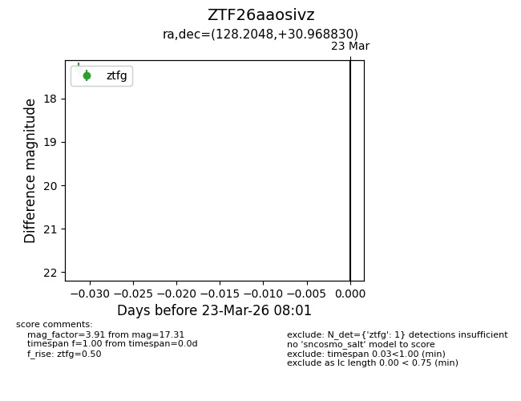
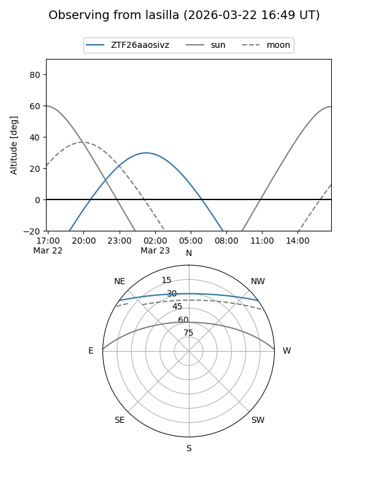
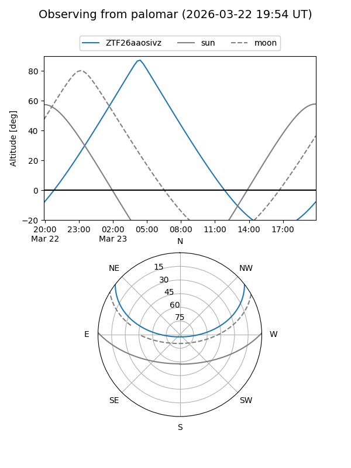

ZTF26aaosivz
Target ZTF26aaosivz at 2026-03-23 08:03
Aliases and brokers:
FINK: link
Lasair: link
ALeRCE: link
alt names
ZTF26aaosivz (ztf,fink_ztf)
Coordinates:
equatorial (ra, dec) = 128.2048,+30.96883
equatorial (HMS+DMS) = 08:32:49.16,+30:58:07.79
galactic (l, b) = (192.3758,+34.14624)
Flags:
Photometry:
last ztfg=17.31
1 ztfg detections
Lightcurve

Visibility


Additional plots